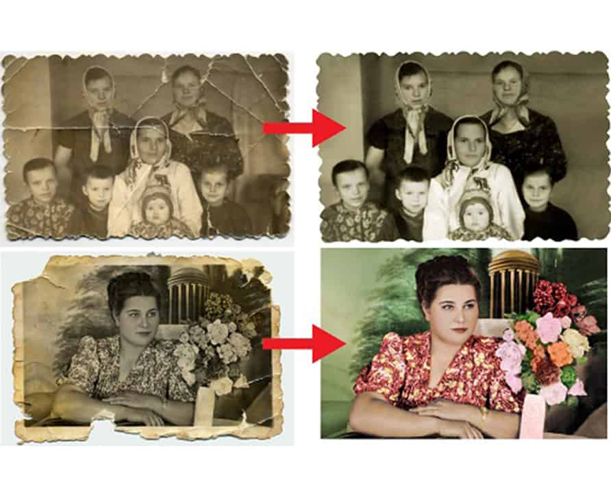

Реставрація та ретуш фотографій

Через декілька десятків років світлини втрачають колір і контрастність, на них з’являються подряпини і плями. У таких випадках необхідно відретушувати знімок. Реставрація фото, назавжди збереже якісну фотографію у цифровому форматі. Наш дизайнер завжди якісно виконає відновлення знімку.